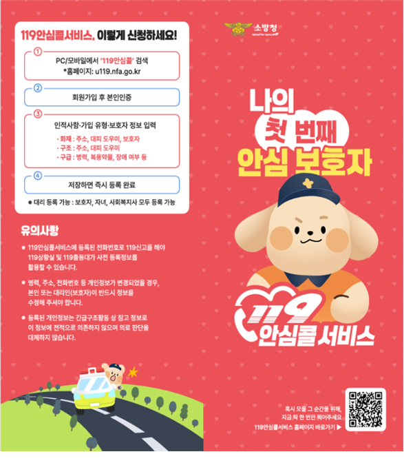

119안심콜 서비스란?
화재·구조·구급 상황에 미리 등록한 정보로 맞춤형 대응을 돕습니다
119안심콜은 화재·구조·구급 등 긴급상황에서 미리 등록한 주소, 질환, 장애 여부, 복용약, 보호자 연락처 등의 정보를 119상황실과 출동대가 확인하여 신속하고 맞춤형 대응을 할 수 있도록 돕는 서비스입니다.
정보 사전 등록
주소·질환·복용약·보호자 연락처 등을 미리 등록합니다.
화재 시 대피 지원
자력 대피가 어려운 사람의 정보를 파악해 구조·대피 활동에 활용합니다.
보호자 연락 지원
등록된 보호자에게 신고 상황을 알리는 데 활용됩니다.
왜 필요할까요?
- 의식 저하 등으로 본인의 상태를 설명하기 어려운 상황에서도 등록된 정보를 확인할 수 있습니다.
- 화재 시 자력 대피가 어려운 어린이·고령자·장애인 등의 특성을 파악해 구조 및 대피 활동에 도움을 줍니다.
- 구급상황에서는 질환·복용약 등 환자의 특성을 미리 파악해 응급 처치에 도움을 줍니다.
- 등록된 보호자에게 신고 상황을 문자로 알려 빠른 연락을 지원합니다.
누가 이용할 수 있나요?
중증질환자, 장애인, 홀몸 어르신, 임산부 등 누구나 무료로 이용할 수 있습니다. 보호자·자녀·사회복지사 등의 대리 등록도 가능합니다.
119안심콜 무료 가입하기 ↗
가입은 소방청 공식 사이트에서 진행됩니다.
119안심콜, 이렇게 신청하세요!
소방청 119안심콜 사이트에서 본인 또는 대리 등록을 진행할 수 있습니다.
STEP 01사이트 접속
아래 가입 버튼을 눌러 소방청 사이트 접속
STEP 02가입 절차 진행
사이트 안내에 따라 가입·본인 확인
STEP 03정보 입력
주소·질환·복용약·보호자 정보 등 입력
STEP 04저장 및 등록 완료
입력한 정보를 저장해 등록 마무리
소방청 안내자료

가입 전 알아두세요
- 119안심콜에 등록된 전화번호로 119에 신고해야 등록정보를 활용할 수 있습니다.
- 병력, 주소, 전화번호 등 개인정보가 변경되면 본인 또는 대리인이 정보를 수정해 주세요.
- 등록된 개인정보는 긴급구조활동 및 정보제공 목적 외에 다른 용도로 사용되지 않는다고 안내되어 있습니다.
- 보호자·자녀·사회복지사 등 대리 등록도 가능합니다.
위 내용은 제공된 119안심콜 홍보자료를 바탕으로 정리했습니다.